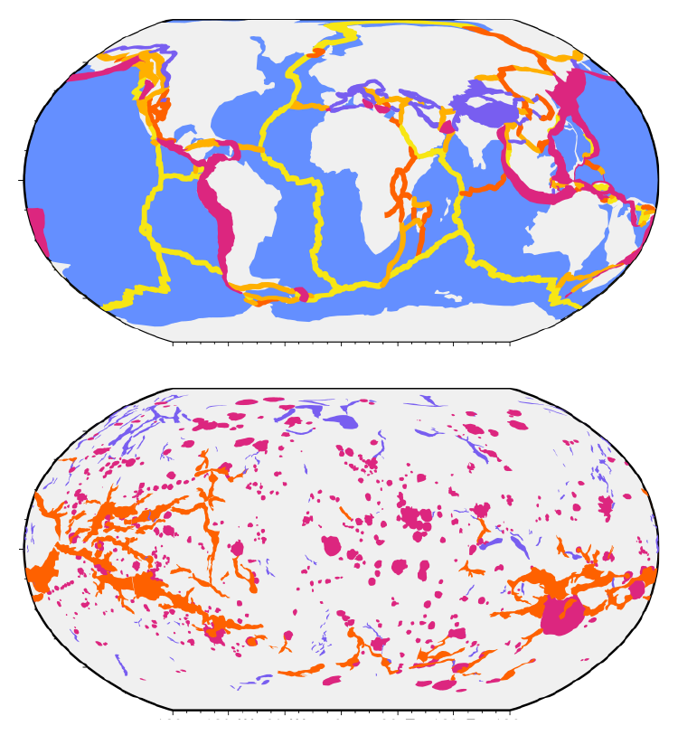
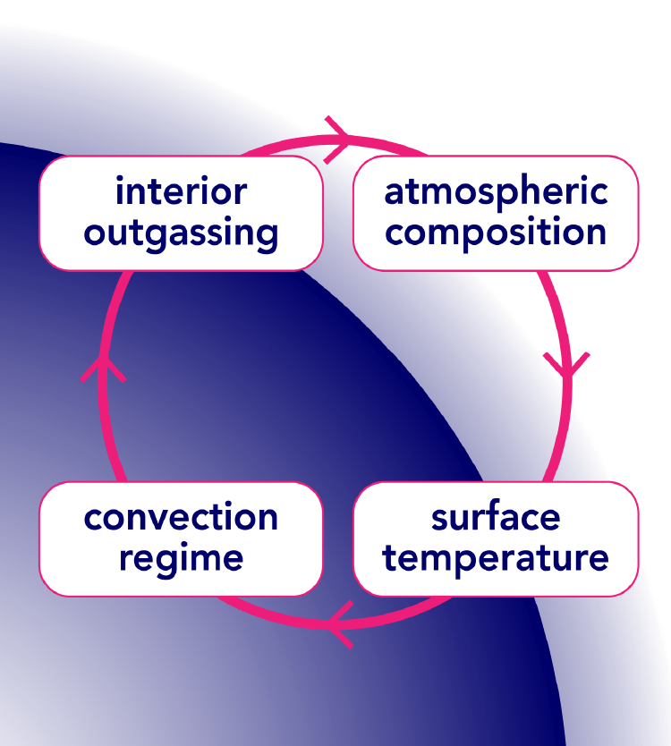
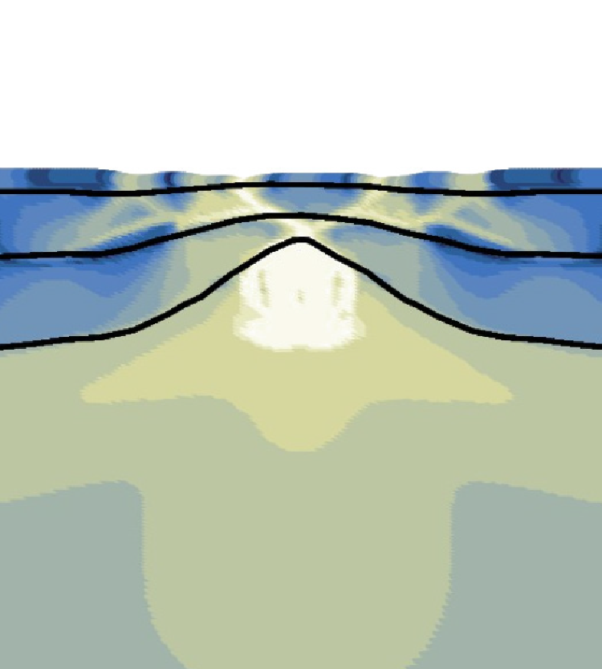
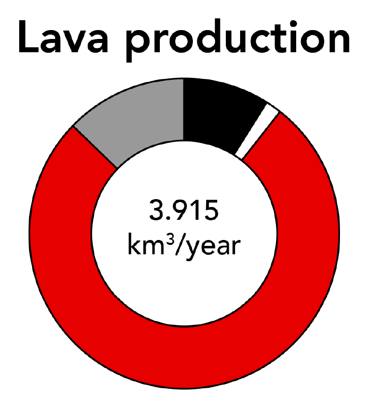

Current Research Projects
[2014 - 2018] • [2019 - 2021] • [Current projects]
-
Seismicity on Venus: Prediction & Detection
I am leading international ISSI team #566: 'Seismicity on Venus: Prediction & Detection' funded by the International Space Science Institute in Bern, Switzerland. We aim to provide estimates of the current seismicity on Venus based on constraints from e.g., geodynamic modelling. Using these estimates, we determine the associated ground motion and atmospheric perturbations. To detect these seismic signals during future missions, we review the feasibility, advantages, and disadvantages of different seismic observation techniques on the surface and in the atmosphere and orbit. More information can be found on our team website.
-

Estimates of annual Venusian seismicity
We estimate the expected annual seismicity of Venus for different levels of possible current activity by scaling the seismicity of the Earth. We scale per tectonic setting and account for differences in seismogenic zone thickness. For active Venus scenarios, we assume that the coronae, ridges, and rifts are seismically active.
-
Steam atmospheres of Earth-like exoplanets
The development of a steam-dominated atmosphere during the Earth's final stages of planetary accretion is considered to be critical to the emergence of a habitable environment on the early Earth. Similarly, understanding the emergence of steam atmospheres on Earth-like exoplanets is crucial for the assessment of exoplanetary habitability. Here, we employ sophisticated climate-chemistry models of radiative-transfer in the atmosphere to assess how steam atmospheres develop as a function of Solar distance (and hence Solar incidence) within the habitable zone.
-

Venus interior-atmosphere coupling
We study the feedback loop between the convective regime of the interior of Venus, the corresponding amounts of volcanic outgassing, and the development of a CO2-dominated atmosphere, which in turn determines the surface temperature of the solid planet. We consider a simple grey atmosphere model of CO2 and H2O.
-

Rifting on Venus
We numerically model the rifting process on Venus and perform an extensive parameter study to understand how strain localises in Venus' crust and mantle at high surface temperatures. We find that a strong crustal diabase rheology is required to localise strain and develop rifts in our models. Preprint available on ESSOAr.
-

Volcanic eruption frequency on Venus
Byrne and Krishnamoorthy (2022) estimated the frequency of volcanic eruptions on Venus by scaling a database with Earth data. I wrote a comment to correct one of their reported numbers and provide more discussion on the nuances of their results. Published in Van Zelst (2022, JGR: Planets).
-

Subduction zone thermal structure
We investigate the effect of temperature-dependent thermal parameters (conductivity, heat capacity, and density) on the thermal structure of subduction zones in the simplified setup of Van Keken et al. (2008). We find that they have a secondary effect on the slab thermal structure. Preprint available on EarthArxiv.
-

101 geodynamic modelling
We present a comprehensive yet concise overview of the modelling process with an emphasis on best practices. We also highlight synergies with related fields, such as seismology. This review is the perfect starting point for anyone wishing to (re)gain an understanding of geodynamic modelling. Published in Van Zelst et al. (2022, Solid Earth)
-

Splay fault rupture & tsunamis
We apply the SC-DR coupling method (Van Zelst et al. 2019 JGR) to splay fault rupture and add a tsunami model to study the ensuing tsunami. We find that multiple splay faults can be activated during a single earthquake by megathrust slip and dynamic stress transfer due to trapped waves. Published in Van Zelst et al. (2022, JGR: Solid Earth)
-

Tectonics & tsunamigenesis
We complement a global earthquake database that contains subduction zone characteristics (Heuret et al., 2011) with tsunami data. We analyse the database using both bi- and multivariate statistical methods to identify tectonic parameters that affect tsunamigenesis. Preprint available on EarthArxiv.